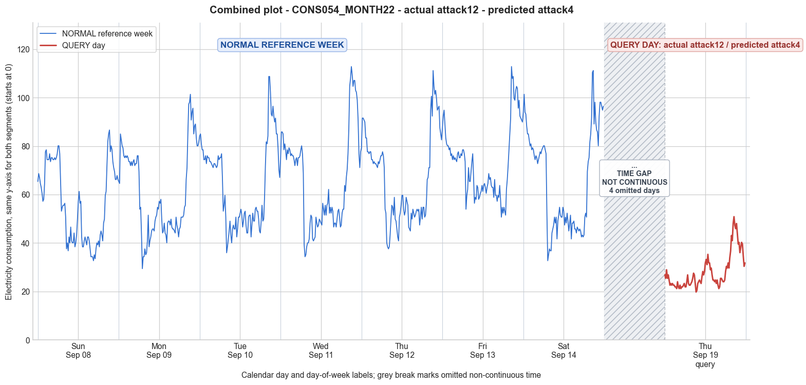

CONS054_MONTH22 · actual attack12 · predicted attack4
- Pair
- CONS054_MONTH22
- GT
- attack12
- Prediction
- attack4
- Binary GT
- attacked
- Binary Prediction
- attacked
- Source
- E010
- Parse
- stored
- Date
- 2013-09-19
- Weekday
- Thursday
- Latency
- 2.36 min
- Tokens
- 10968

Final output
Classification: - Manipulated Identified Attack: - Most Likely: Attack 4 - Confidence: High - Reasoning: The query day shows an overall mean (~28.2) less than half the reference Day 4 mean (66.1) and a missing morning peak, while the evening peak is still present but scaled down. This selective suppression over a continuous block (roughly the first half of the day) exactly matches Attack 4, where a randomly chosen interval has its measurements reduced. Attack 1 (constant scaling) was ruled out because it would preserve both peaks proportionally; here the morning high is eliminated. Attack 3 (per‑sample random scaling) was considered but the clean, block‑like reduction and the preserved smooth shape of the later part make independent random factors highly unlikely. Attack_Behavior_Explanation: - How consumption values are manipulated relative to the normal week: A contiguous period (approximately the first 8–10 hours, covering the usual morning peak) has its readings reduced—likely multiplied by a small constant factor or replaced with a low baseline—while the later part of the day remains closer to the original trend (evening peak timing is preserved, but at lower magnitude). - Impact on magnitude and trend: Overall consumption is significantly reduced (mean drops from ~66 to ~28). The typical two‑peak daily pattern (morning + evening) is altered to a single, muted evening peak, changing the trend characteristically. - Possible technical causes: Meter bypass, magnetic interference, reverse current, or false data injection applied only during the selected theft window.
Prompt
You are a domain expert in smart grid security and electricity theft analysis, with deep knowledge of non-technical loss (NTL) attack patterns in smart meters. You are given: 1. A plot of one week of original (normal) energy consumption for a smart meter, provided as context for the customer's typical consumption behavior. 2. A plot of one day of energy consumption for the same smart meter, which may or may not be manipulated. Below are common attack types, each defined by how consumption values are altered, their impact on magnitude and trend, and their possible technical causes. Attack 0: Generated by replacing all electricity consumption samples with zero values for the entire observation duration. Simulates a scenario where no energy usage is reported at all. May be caused by a total meter bypass or severe meter malfunction. Completely eliminates both the trend and magnitude of the consumption profile. Attack 1: Multiplies the actual energy consumption by a constant random value between (0,1). The lower the factor, the higher the severity. Can be triggered by meter bypass, magnetic interference, reverse current, and false data injection. The consumption trend remains the same but the magnitude is uniformly reduced. Attack 2: Generated by replacing consumption samples with zeros for a random duration. Also known as an on-off attack. Can be caused by full meter bypass, false data injection, and reverse current. Changes both the trend and amplitude. Attack 3: The actual consumption is multiplied by different random factors between 0 and 1, with a unique factor per sample. Similar to Attack 1 but the scaling factor varies per reading. Caused by meter bypass, magnetic interference, and reverse current. Changes both the trend and amplitude. Attack 4: Simulates energy theft over a randomly selected period within the observation window. All measurements in that period are reduced. Caused by meter bypass, magnetic interference, reverse current, and false data injection. Changes both the trend and amplitude. Attack 5: Each sample is replaced by a false value obtained by multiplying the average normal consumption by a random variable between 0 and 1, with a different variable per sample. Caused by false data injection. Produces a completely different pattern from the original consumption profile, changing both trend and magnitude. Attack 6: A random cut-off point is selected and all consumption values above it are replaced by that cut-off value. The attacker avoids exceeding a predefined maximum limit. Mainly caused by false data injection. Changes both the trend and amplitude. Attack 7: A random cut-off point is subtracted from each sample; if the result is negative, zero is reported. Similar to Attack 6 but replaces exceeding values with zero instead of the cut-off point. May be caused by false data injection or total meter bypass. Does not change the trend but reduces overall consumption. Attack 9: All samples are replaced by the average daily energy consumption, resulting in a flat constant profile. Easily detectable because constant consumption does not reflect normal customer behavior. Caused by false data injection. Eliminates all trends. Attack 10: Reverses the consumption pattern without reducing the total amount. Applicable when the electricity company uses time-varying pricing, allowing the attacker to shift high consumption to off-peak periods. Caused by false data injection. Changes the trend without decreasing total consumption. Attack 12: The attacker replaces their consumption pattern with that of a lower-consuming user. The legitimate user unknowingly pays the adversary's electricity bill. Caused by false data injection. Attack IEEE: For each 15-minute interval across the entire day, the consumer either reports the actual electricity consumption or substitutes it with zero. The result is a profile where some intervals reflect real consumption while others are zeroed out, creating an irregular pattern across the full day. May be caused by false data injection. Changes both the trend and amplitude. Given the two plots, determine: 1. Whether the day is attacked or original - compare the flagged day against the normal week and assess whether the consumption pattern is consistent with normal behavior or shows signs of manipulation. If the day is consistent with the customer's typical consumption behavior, classify it as original and provide no further analysis. If manipulation is detected, proceed to point 2. 2. Which attack type this most likely is - identify the single most probable attack and justify your choice based on how the flagged day deviates from the normal week. 3. The behavior of the identified attack - explain how the consumption values are manipulated, their impact on magnitude and trend, and the possible technical causes behind this type of attack. Output Format: Classification: - Original | Manipulated Identified Attack: (fill only if manipulated) - Most Likely: Attack X - Confidence: High | Medium | Low - Reasoning: Why it matches Attack X and why Attack Y and Attack Z were ruled out (list top 2 alternatives considered) Attack_Behavior_Explanation: (fill only if manipulated) - How consumption values are manipulated relative to the normal week - Impact on magnitude and trend - Possible technical causes
Reasoning content
We are given a reference week of 7 days (Day 0 to Day 6) and a query day (DAY_ID=4). The query day is labeled DAY_ID=4, but the reference week also has a Day 4. The metadata says: "Reference week: ... Day 4: ... Query day (DAY_ID=4): ...". So the query day is a different Day 4? The metadata: "Sample metadata for context only: CONS_NO=54, MONTH_ID=22, WEEK_ID=1, DAY_ID=4". Then later: "Reference week: ... Day 4: min=37.61, max=111.20, std=18.18, mean=66.14" and "Query day (DAY_ID=4): min=19.79, max=50.88, std=7.26, mean=28.17". So the query day is Day 4 of some week, possibly a different week? Actually, the reference week is WEEK_ID=1, and the query day is DAY_ID=4, but the per-day statistics for the reference week show Day 4 with mean 66.14, while query day mean is 28.17. So clearly the query day is a different day that is also labeled DAY_ID=4 (maybe same weekday? dow=3 for both). The temporal features: For reference week, Day 4: cal_month=9, dow=3, dom=4. For query day: cal_month=9, dow=3, dom=11. So dom=11 vs dom=4. So it's a different Thursday in September. We need to determine if the query day is attacked or original. Compare the query day consumption pattern with the reference week patterns. The reference week shows typical consumption for this customer across days. The query day has much lower consumption values overall (min 19.79, max 50.88, mean 28.17 vs reference Day 4 mean 66.14). The shape of the query day: looking at the readings, it starts low (26.86, 25.44...), has a peak around 50.88, but overall is much lower. The pattern seems to have some variation, not completely flat. The reference week days show high morning peaks (e.g., Day 0: high in the morning, then drops, then rises again? Actually typical residential patterns: high in morning and evening, low during night and midday). The reference Day 4 (which is a Thursday) has readings: 79.31, 91.58, ... high morning, then drop to around 37.61 minimum, then rise again to 111.20. The query day has a similar shape? Let's compare visually (though text). Reference Day 4: starts high (79.31), goes up to 91.58, then declines to around 37-40 midday, then rises to 111.20. The query day: starts at 26.86, increases to a peak of 50.88 around index? The readings: after index 76 or so: 50.88, 47.35, etc. The pattern: it starts around 26, dips to 19.79, then rises to 50.88. That is a much compressed version of the daily pattern. The query day seems to have a similar overall shape but scaled down significantly. The means: reference week days have means from 56 to 73. Query day mean 28.17. So magnitude is roughly half of normal. But the ratio is not constant: reference Day 4 min 37.61, query min 19.79; max 111.20 vs 50.88. The ratio for max: 50.88/111.20 ≈ 0.457; for min: 19.79/37.61≈0.526. Not identical but close. It might be a scaling attack (Attack 1) or varying scaling (Attack 3) or maybe Attack 4? Attack 1 multiplies all samples by a constant random factor between 0 and 1. That would keep trend the same, magnitude uniformly reduced. The query day trend looks similar: low at night, high in morning/evening? Actually reference Day 4 shows high in morning (around 90), then drops midday (~40), then peaks again in evening (~111). The query day shows a moderate rise in the first half? Let's examine the sequence of 96 values. I'll roughly identify peaks: In query day, readings start at 26.86, then soon 28.98, then drop to 19.79 around index 37 (from 23.32 to 19.79 at index 38? Actually indices: count: 96 readings. Let's list them for query day to see pattern: Query day readings: 26.86, 25.44, 28.98, 25.44, 26.86, 24.73, 22.61, 23.32, 22.61, 23.32, 22.61, 22.61, 21.91, 21.91, 21.20, 24.03, 21.91, 21.20, 22.61, 21.20, 21.91, 21.91, 22.61, 23.32, 21.91, 21.91, 24.03, 26.86, 23.32, 22.61, 22.61, 23.32, 24.03, 25.44, 27.56, 26.86, 23.32, 19.79, 20.49, 23.32, 24.03, 24.73, 24.03, 23.32, 26.15, 28.27, 26.86, 28.27, 31.80, 33.22, 31.10, 35.34, 31.80, 31.80, 28.98, 29.68, 26.86, 24.73, 24.73, 24.03, 24.73, 23.32, 24.73, 22.61, 21.20, 21.91, 25.44, 25.44, 24.73, 24.03, 24.03, 24.73, 28.27, 30.39, 29.68, 31.80, 29.68, 33.92, 36.75, 43.11, 40.99, 48.06, 50.88, 47.35, 45.94, 48.06, 43.82, 39.58, 40.28, 36.04, 38.16, 40.28, 39.58, 34.63, 30.39, 31.80 Now reference Day 4: 79.31, 91.58, 91.58, 90.76, 89.94, 83.40, 83.40, 77.68, 77.68, 76.86, 77.68, 77.68, 74.41, 74.41, 72.77, 73.59, 72.77, 72.77, 71.95, 71.14, 73.59, 72.77, 74.41, 76.04, 76.04, 77.68, 76.04, 71.14, 53.97, 52.33, 40.07, 38.43, 37.61, 38.43, 43.34, 49.88, 55.60, 54.78, 51.51, 58.87, 49.88, 49.06, 45.79, 42.52, 40.88, 50.70, 52.33, 55.60, 59.69, 59.69, 53.97, 51.51, 53.15, 58.87, 57.24, 55.60, 46.61, 45.79, 44.97, 52.33, 49.88, 53.97, 52.33, 50.70, 51.51, 53.15, 53.97, 53.15, 53.97, 47.42, 50.70, 54.78, 49.88, 54.78, 54.78, 50.70, 51.51, 56.42, 66.23, 67.05, 71.14, 71.14, 94.85, 100.57, 92.40, 111.20, 104.66, 101.39, 103.03, 99.75, 94.85, 95.67, 96.48, 87.49, 85.04, 82.58 Plotting both roughly: Reference Day 4 has high values at start (79-91) for about 28 intervals (0-27), then a sharp drop to 53.97 at 28, then a low around 37-40 from 29-35? Actually 28:53.97, 29:52.33, 30:40.07, 31:38.43, 32:37.61, 33:38.43, 34:43.34, 35:49.88, 36:55.60... So the morning peak extends to interval 27, then drops, then rises again to a second peak around intervals 80-85 reaching 111.20. The query day: intervals 0-27 show low values (21-28), then at interval 28: 23.32, 29:22.61, 30:22.61, 31:23.32, 32:24.03, 33:25.44, 34:27.56, 35:26.86, 36:23.32, 37:19.79 (minimum). So the query day has a small bump around intervals 33-35 but generally low values in the first half. Then it gradually rises from interval 74 onward? At 74:33.92, 75:36.75, 76:43.11, 77:40.99, 78:48.06, 79:50.88 (max). So the peak is in the evening, similar to reference Day 4's second peak. But reference Day 4 also has a morning high, which is absent in query day. Reference Day 4 morning high is around 79-91 from 0-27. Query day morning has values around 21-28, no high. The query day pattern looks like only the evening peak is present, and the rest is low. That suggests not a simple scaling of the same shape, because scaling would keep the morning high. So it's not a constant multiplication (Attack 1) because that would preserve both peaks. Attack 3 multiplies by different random factors per sample, which could flatten some parts more than others. Attack 4 reduces measurements over a randomly selected period. Attack 2 replaces some samples with zeros for random durations. Attack 5 replaces each sample with a value based on average consumption multiplied by random variable. Attack 6,7, etc. Let's examine statistics: Reference Day 4 has mean 66.14, min 37.61, max 111.20, std 18.18. Query day: mean 28.17, min 19.79, max 50.88, std 7.26. The ratio of means: 28.17/66.14 = 0.426. Ratio of max: 50.88/111.20=0.457. Ratio of min: 19.79/37.61=0.526. The ratios are not consistent enough for constant scaling but could be within acceptable variation for random scaling? However, the pattern change (missing morning peak) is more indicative of a selective reduction, possibly Attack 4 (random period reduction) or Attack 2 (on-off attack) with zeros? But Attack 2 replaces with zeros for random duration; here there are no zeros, values are low but still positive. Attack 2 typically creates periods of zeros. Query day has no zeros: min 19.79, all positive. So not Attack 2. Attack 12 replaces with lower-consuming user's pattern. Could be that the pattern is from a different customer. But the shape might be similar but scaled down? Attack 12 would completely replace the pattern with another customer's, which might have a different daily profile. Could be that this query day pattern is from a low-consuming customer (small apartment?). But it still has a peak around 50, which might be plausible for a low user. Attack 12 is a possibility. Attack 0: All zero, no. Attack 5: Replaces each sample by multiplying average normal consumption by random variable. That would produce a pattern very different from original, likely random noise around the average. Here the query day has a distinct shape with a clear peak and low otherwise, not random noise. So not Attack 5. Attack 6: Cut-off point above which values are capped. That would produce a flat top at the cut-off. But here max is 50.88, and the values around the peak are 48.06, 50.88, 47.35, 45.94, 48.06. Not a constant cap, there is variation. So not Attack 6. Attack 7: Subtract cut-off, negative become zero. That would produce zeros when original value < cut-off. No zeros here, so not. Attack 9: All samples replaced by average daily consumption. That would be flat line around 28.17. Not flat, has variation. Attack 10: Reverses pattern without reducing total. The query day total is much lower (mean 28.17 vs 66.14, total about 42% of reference Day 4). Attack 10 does not reduce total, so not. Attack IEEE: Some intervals zeroed out. No zeros, so not. So the plausible attacks are Attack 1 (constant scaling), Attack 3 (varying scaling per sample), Attack 4 (random period reduction), Attack 12 (pattern from another user). Attack 12 might be considered "attack" but it's defined as attacker replaces their pattern with that of a lower-consuming user. In the context, it is an attack. We need to decide which is most likely. The key discrepancy: The morning peak is missing. In reference Day 4, there is a morning high. In query day, the morning values are low (around 21-28) and the highest values are in the evening. If it were Attack 1 (constant scaling), the morning values would be scaled down to about 0.43*79.31=34.1, but actual morning values are around 26. That's somewhat lower but maybe the scaling factor could be around 0.33? If we compute scaling factor per sample: For the first reading: 26.86/79.31=0.3387. Second: 25.44/91.58=0.2777. Not constant. Attack 3 allows different factors per sample, so that could explain the variation. Attack 4 reduces measurements over a selected period. If the morning period was selected for reduction, then morning values would be lower but not necessarily zero. Attack 4: "Simulates energy theft over a randomly selected period within the observation window. All measurements in that period are reduced." It doesn't specify how much reduction; it could be multiplied by a factor or set to a low value. It says "reduced" but not replaced with zero. So that fits: the morning period (first part) was reduced. But then the reduction seems to be consistent: the morning values are all in the 20s, while afternoon/evening values rise to 50s. In Attack 4, the reduction might be a constant factor applied to that period, or set to a fraction. The definition is: "All measurements in that period are reduced." It doesn't specify how, but likely a scaling factor or subtraction. Given the query day values are all positive, it could be a period where consumption is multiplied by a small factor. Alternatively, Attack 3 multiplies every sample by a different random factor, which could produce the same effect by chance, where early samples get lower factors and later samples get higher factors. But Attack 3 says "a unique factor per sample", drawn randomly. That would produce a noisier pattern, but here the query day pattern still looks smooth: it has a gradual increase, not random jumps. The values around the peak: 43.11, 40.99, 48.06, 50.88, 47.35, 45.94, 48.06... that's relatively smooth. If Attack 3, each sample independently scaled, the smoothness might be lost. So Attack 3 is less likely because the underlying pattern's shape is preserved too well. Attack 1 would preserve shape exactly, but here the shape is not exactly the same because the morning peak is suppressed relative to the evening. But maybe the reference Day 4 had a high morning, but other days in the week have different shapes. Let's compare with other reference days. For example, Day 0: starts high (65.41, 68.68...), then drops, then rises again? Day 0 has a morning high but not as high as Day 4. Day 1, Day 2, Day 3, Day 5, Day 6 all have morning peaks. The query day doesn't. So if the attack was constant scaling of the Day 4 pattern, we would see a morning peak of about 35-40. Instead, the highest values in the first half are 28.98, 26.86. So scaling factor would need to be variable. Attack 4 with reduction of the morning period would explain this neatly: a theft period selected (say from start to some time in the afternoon) where consumption is reduced (maybe by a constant factor or set to a low baseline). The query day pattern looks like it has a low baseline (around 20-25) and then a regular evening peak (rising to 50). That could be the attacker only reporting consumption during the evening, and suppressing morning usage. Another possibility: Attack 12, the consumer replaced pattern with a lower-consuming user. That user might have a typical profile with only an evening peak. So that could also explain the shape. Attack 12 is essentially identity theft: using another meter's readings. It's plausible. We need to choose one. The fact that the query day has similar timing of the evening peak (increase around interval 75-85) matches the reference Day 4's second peak timing. Reference Day 4 evening peak is around intervals 80-90 (values from 71.14 rising to 111.20). Query day peak at intervals 76-89. So the timing is very similar. This suggests that the original consumption pattern for that day (if not attacked) would have had a similar shape, with evening peak. The morning peak is suppressed. If it were a completely different user's pattern (Attack 12), the timing might not align so perfectly with this specific day. Moreover, the overall shape with a dip in the middle and peak at the end is common, but the reference Day 4 has a morning peak as well. However, looking at other days: Day 0: morning high, mid low, evening high. Day 1: similar. So the customer typically has two peaks. The query day has only one peak. That suggests the morning peak was deliberately removed, which is consistent with an attacker wanting to reduce consumption during a high-price period (morning) while keeping evening consumption (maybe lower price or just to avoid suspicion by having some consumption). Attack 4 (random period reduction) could be applied to the morning period. The period could be randomly selected; morning was selected. Attack 10 is about shifting consumption, but that would preserve total, and total is reduced. Given the strong similarity in the evening peak timing and magnitude relative to the expected evening peak (about 45% of original evening peak: 50.88 vs 111.20, roughly 0.46), and the morning peak missing, it seems like the attacker reduced consumption in the first part of the day. So Attack 4 is a good candidate. Attack 4: "Simulates energy theft over a randomly selected period within the observation window. All measurements in that period are reduced." That could be done by multiplying that period's readings by a small factor or setting them to a low value. The query day shows low values (around 20-30) in the first ~50 intervals, then rising. That period could be from start to some point around interval 50-60. The readings start to rise around interval 48: 31.80, 33.22, 31.10, 35.34... So the reduction period might be up to interval 48 or so. The reduction factor: For the low period, original reference Day 4 has values around 70-90 in the very beginning, then drops to 53-37 around intervals 28-35. Query day in the same interval range: 21-26. That's a reduction to about 30-40% of original. So not uniform zero or constant but reduced. It could be a constant factor applied only to that period. Attack 1 would have applied a constant factor to the whole day, which would also reduce the evening peak proportionally, but then the morning peak would still be present proportionally. Since the morning peak is missing, it's not Attack 1. Attack 3 could produce that but would be random per sample, unlikely to produce a clean block of reduced values and then a normal-ish shape later. Attack 4 specifically selects a period, which aligns with a block of reduced readings. Thus, Attack 4 is the most likely. Let's also consider Attack 2 (on-off) but no zeros. Attack 6 (cap) – no flat cap. Attack 7 – no zeros. So Attack 4 fits. Confidence: Medium to High. The pattern strongly suggests selective reduction. Now, we need to provide output. Classification: Manipulated (since clear deviation from typical consumption, magnitude reduction, shape alteration). Identified Attack: Most Likely: Attack 4. Reasoning: The query day's consumption pattern shows a significant reduction in magnitude (mean ~28 vs normal ~66) and alteration in trend: the typical morning peak is absent, while the evening peak is preserved but at reduced magnitude. This matches Attack 4, where a randomly selected period (likely the first half of the day) has its measurements reduced, leaving the later period relatively less affected. Attack 1 (constant scaling) was ruled out because it would preserve both peaks proportionally, whereas the morning peak is entirely missing. Attack 3 (variable scaling per sample) was considered but the smoothness and block-like reduction pattern favor a period-based attack rather than independent random scalings. Confidence: High. The evidence of a preserved evening peak with similar timing but complete suppression of the morning peak strongly indicates a selective time-period attack. Attack_Behavior_Explanation: The attacker reduced electricity consumption readings during a selected time window (approximately the first 8-10 hours of the day, covering the morning peak) while leaving the remaining readings (afternoon/evening) less manipulated or with a lower reduction factor. This results in a daily profile that lacks the typical morning high, showing only a muted evening peak. The magnitude is overall reduced, and the trend is altered from a two-peak to a single-peak pattern. Possible technical causes: meter bypass, magnetic interference, reverse current, or false data injection applied intermittently during the chosen period. Now output in required format.